Rychlý lokální render pro Nuke. Render se rozdělí na kousky (chunky) a ty se počítají v několika Nuke procesech najednou. Každý hotový frame JKrender hned zkontroluje na disku.
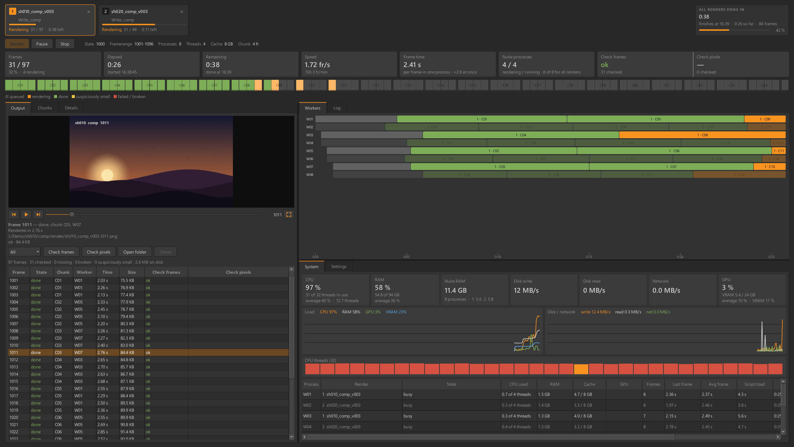
Klasický render v Nuku běží v jednom procesu, který frame po framu počítá celý script. Jeden Nuke ale málokdy vytíží všech 32 vláken procesoru. JKrender proto pustí několik Nuke procesů vedle sebe. Každý otevře script jen jednou a pak dostává kousky práce, takzvané chunky: třeba 10 framů za sebou.
-m). Processes × Threads by mělo dát zhruba počet vláken PC (tady 32).-c). Proces si ve skutečnosti vezme víc. Kolik, ukáže System › RAM.| Co | Kde |
|---|---|
| Nastavení | %USERPROFILE%\.jkrender\settings.json (každý uživatel má svoje) |
| Logy renderů | ~/.nuke/JKrender/log/: jedna složka na render (snapshot scriptu, job a log každého Nuke procesu). Starší než 7 dní se mažou. |
| Výsledky testů | ~/.jkrender/test_results |
| Vyrenderované framy | Tam, kam je posílá Write. JKrender je sám nikdy nemaže, jen přes tlačítko Delete. |
1Zkopíruj celou složku JKrender do %USERPROFILE%\.nuke\.
2Do ~/.nuke/init.py přidej řádek (soubor případně vytvoř):
nuke.pluginAddPath("./JKrender")
3Restartuj Nuke. Při prvním startu se JKrender zeptá, jestli stáhnout numpy a OpenEXR pro náhled EXR (asi 15 MB). Když odmítneš, render funguje dál, jen bez náhledu EXR. Na dotaz se znovu dostaneš smazáním souboru lib/DECLINED.
Volitelně: pro detaily a přehrávač MOV/MP4 dej na PATH ffprobe/ffmpeg (winget install ffmpeg). Potřeba je Nuke 16 (PySide6).
| Položka | Co dělá |
|---|---|
| Render Selected Write(s) Ctrl+Alt+R | Pošle vybrané Writy (nebo Groupy s Writy) do JKrenderu. Každý Write dostane vlastní kartu. Když okno ještě neběží, otevře se. |
| Reopen Renders After a Crash | Vrátí karty renderů, které byly otevřené, když JKrender spadl. |
| Open Renders Folder | Otevře složku s logy renderů. |
Okno má nahoře karty renderů a ovládací řádek, pod nimi čísla a mapu framů. Zbytek tvoří tři panely: vlevo Output / Chunks / Details, vpravo nahoře Workers / Log a vpravo dole System / Settings. Hranice mezi panely jde táhnout myší.
Každý odeslaný Write je jedna karta: číslo, název scriptu, jméno Writu, pruh postupu a stav (Ready, Waiting, Rendering, Paused, Checking output, Done, Failed, Stopped). Klik kartu vybere a celé okno pak ukazuje tento render. Shift+klik vybere víc karet; Render, Pause a Stop pak platí pro všechny. Křížek × render zavře, framy na disku zůstanou.
Rendery sdílejí jeden rozpočet procesů. Vedle sebe jich běží nejvýš tolik, kolik je v Settings Max renders at once (výchozí 3); procesy se mezi ně dělí (8 → 4 + 4 → 3 + 3 + 2).
Kdy by měly být hotové všechny rendery, které běží nebo čekají, při rychlosti, jakou PC renderuje teď. Pod tím: v kolik skončí, jak dlouho už běží a kolik framů zbývá. Když všechny doběhnou, karta ukáže ALL RENDERS TOOK, tedy jak dlouho to celé trvalo.
| Prvek | Co dělá |
|---|---|
| Render | Spustí vybraný render (nebo víc vybraných). Framy, které už jsou na disku v pořádku, přeskočí. Po Stopu render pokračuje tam, kde skončil (Resume). U hotového renderu se zeptá, jestli renderovat znovu. |
| Pause | Zmrazí všechny Nuke procesy renderu uprostřed framu (procesor se uvolní, paměť zůstane držená). Další klik pokračuje. |
| Stop | Zastaví render, ukončí procesy a smaže napůl zapsané framy a dočasné soubory Nuka. Hotové framy zůstanou. |
| Slate | Jestli se renderuje slate frame a na kterém framu (Settings › Job). |
| Framerange | Framy tohoto renderu: rozsah z Nuku, pokud jsi ho nezměnil v Settings › Job. |
| Processes · Threads · Cache · Chunk | S čím render běží. Mění se v Settings › Processes and Chunks; počet procesů i za běhu pravým tlačítkem v System. |
| Barevný pruh | Výsledek renderu, viz níže. |
| Barva | Co znamená | Příklad |
|---|---|---|
| Zelená | Hotovo, všechny framy jsou na disku a prošly kontrolou. | Done in 2:06. All 97 frames are on disk and pass the check. |
| Žlutá | Hotovo, ale něco není ověřené nebo vypadá podezřele (framy nezkontrolované, podezřele malé). | frames not checked · 2 suspiciously small |
| Červená | Chyba: render selhal, rozbité framy, nebo Check pixels našel problém (NaN, černý frame…). | 2 broken frames · Output: Problems shows them |
| Šedá | Probíhá: Checking pixels…, čekání na volné procesy a podobně. | Waiting: 1 render already uses the PC |
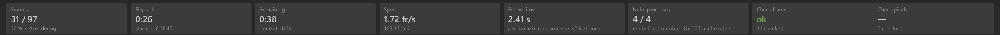
| Dlaždice | Co ukazuje |
|---|---|
| Frames | Hotové / všechny framy renderu, procenta a kolik se jich právě renderuje. |
| Elapsed | Jak dlouho render běží (bez pauz). |
| Remaining | Odhad zbývajícího času při současné rychlosti. |
| Speed | Framy za sekundu a za minutu, všechny procesy dohromady. Nejlepší číslo pro porovnání nastavení. |
| Frame time | Kolik trvá jeden frame v jednom procesu a kolik framů se počítá najednou (× N at once). |
| Nuke processes | Kolik procesů renderuje / kolik jich běží, plus ty, které se načítají nebo čekají. |
| Check frames | Kontrola souborů: chybějící, prázdné, useknuté, nečitelné a podezřele malé framy. |
| Check pixels | Kontrola pixelů (EXR, PNG, JPEG, TIFF, DPX): černé, prázdné a jednobarevné framy, framy stejné jako jiný a frame, jehož velikost, kanály nebo bitová hloubka se liší od ostatních. U EXR navíc NaN, inf a komprese. |
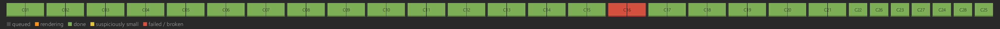
Každý obdélníček je jeden frame, seskupené po chuncích (C01, C02…). Klik na frame ho otevře v náhledu. Barvy:
čeká (queued) renderuje se hotovo byl už na disku (přeskočen) podezřele malý selhal / rozbitý
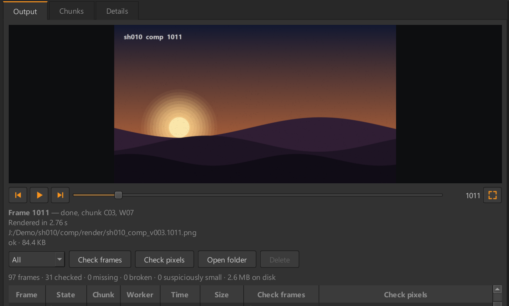
Předchozí frame · Play/Pause (přehrává hotové framy dokola ve fps scriptu) · další frame · posuvník přes všechny framy · číslo framu · zvětšit (náhled přes tři panely, Esc zpět). Pod lištou jsou informace o framu: cesta, velikost, rozlišení, kanály a výsledky kontrol.
| Prvek | Co dělá |
|---|---|
| Filtr | All: všechny framy. Rendered: jen ty na disku. Problems: chyby, podezřele malé framy a nálezy pixelové kontroly. Framerange: jak je na tom každý frame zvoleného rozsahu (na disku, not on disk, broken on disk). |
| Check frames | Znovu projde soubory všech framů: existuje, není prázdný, je celý a čitelný a není výrazně menší než ostatní. |
| Check pixels | Na pozadí projde pixely každého framu (EXR, PNG, JPEG, TIFF, DPX): černé, prázdné a jednobarevné framy, framy stejné jako jiný kdekoli v sekvenci, odlišná velikost, kanály nebo bitová hloubka; u EXR i NaN, inf a komprese. Zhruba 0,1 s na 4K frame. Jen hlásí, nic znovu nerenderuje. |
| Open folder | Otevře složku s výstupem. |
| Delete | Smaže vyrenderované framy z disku: všechny (výchozí) nebo zadaný rozsah. Předtím se zeptá. |
Sloupce: Frame, State, Chunk, Worker (který proces ho počítal), Time, Size, Check frames, Check pixels. Seznam začíná prázdný a framy přibývají, jak se renderují. Framy na disku mimo zvolený Framerange zůstávají v seznamu s poznámkou not in Framerange.
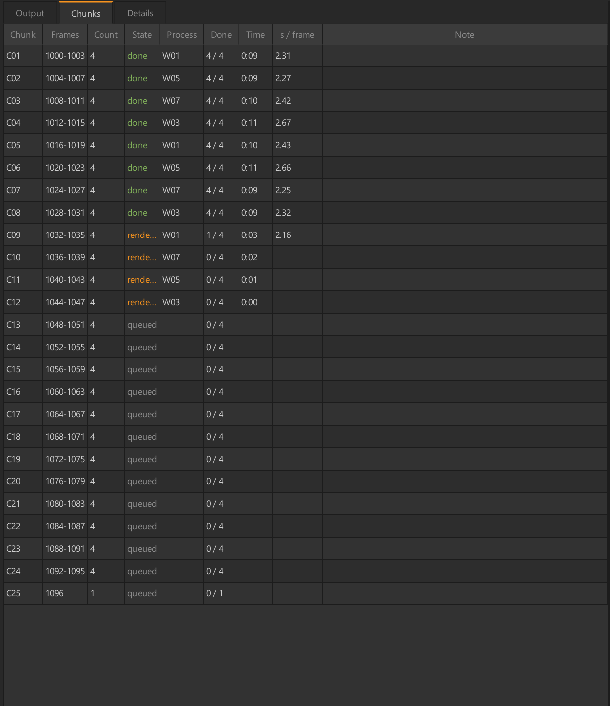
Jeden řádek na chunk: Chunk (C01…), Frames (rozsah), Count, State, Process (který ho počítá), Done, Time, s / frame a Note (proč byl chunk zopakován a podobně).
Pravé tlačítko: Render again (chunk znovu), Show process log (log procesu, který ho počítal), Delete frames from chunk (jen když render neběží).
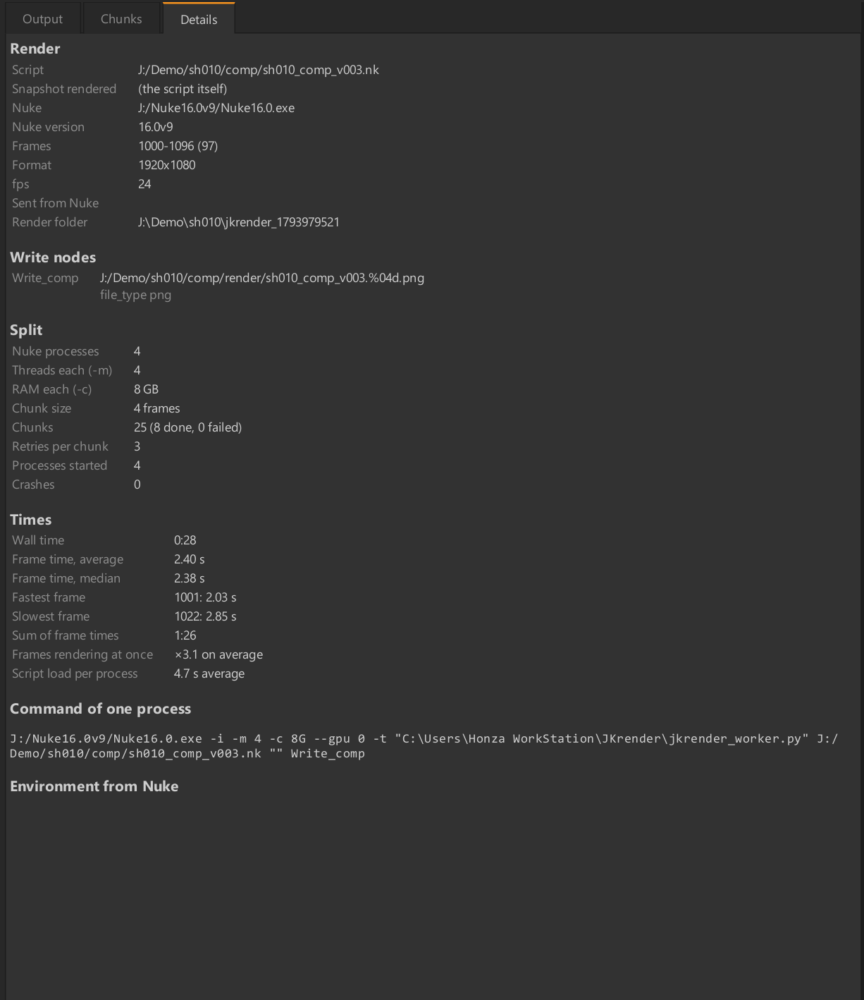
Všechno o renderu na jednom místě: script a jeho snapshot, Writy a výstupní cesty, formát, fps, rozsah, verze Nuka, s jakými Processes × Threads × Cache běží, časy a cesty ke logům. Hodí se, když potřebuješ zjistit, co přesně se renderovalo.
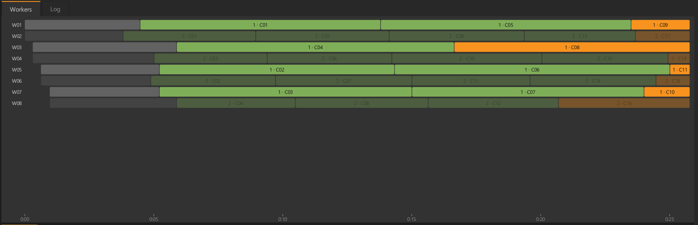
Jeden řádek na Nuke proces (W01–W08), zleva doprava čas. šedá: Nuke startuje a otevírá script. zelená: hotové chunky (s číslem chunku). oranžová: chunk, který se právě renderuje. Chunky ostatních renderů jsou ztlumené (Settings › Dim other renders in Workers). Je hned vidět, jestli některý proces stojí, startuje znovu nebo dlouho otevírá script.
Pravé tlačítko na řádku procesu otevře stejné menu jako v panelu System (kapitola 9).
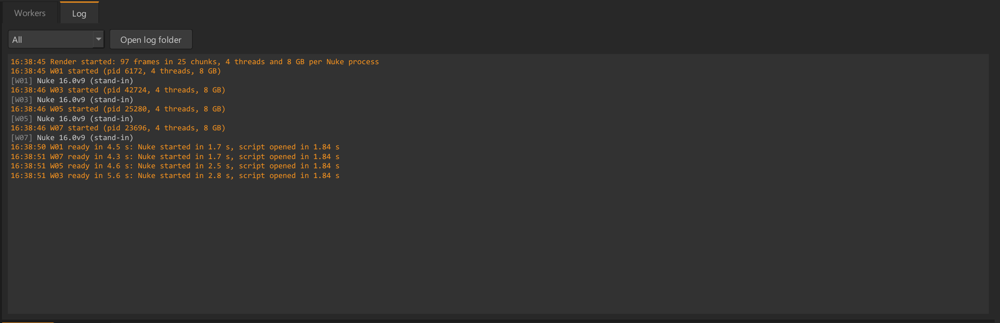
Zprávy JKrenderu a výstup každého Nuke procesu s časem. Filtr: All, JKrender only (jen zprávy JKrenderu), Errors and warnings. Open log folder otevře složku s logy tohoto renderu: snapshot scriptu, job.json a worker_NN.log každého procesu.
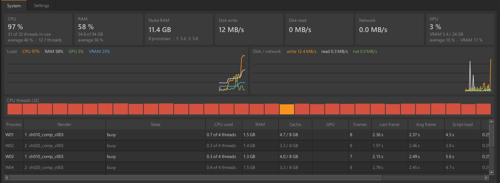
CPU (využití a vlákna), RAM (celková), Nuke RAM (kolik berou Nuke procesy), Disk write, Disk read, Network, GPU (využití a VRAM). Graf Load ukazuje CPU, RAM, GPU a VRAM v %, graf Disk / network přenosy v MB/s. CPU threads: jeden sloupeček na vlákno procesoru, takže je vidět, jestli je PC vytížené celé.
| Sloupec | Význam |
|---|---|
| Process | Číslo procesu (W01…). |
| Render | Na kterém renderu pracuje. |
| State | Co dělá: loading, rendering, idle, paused, closing… Při čekání stručně na co, např. wait: RAM 99 % / 95 %. |
| CPU used | Kolik vláken procesoru proces opravdu vytěžuje. |
| RAM · Cache | Skutečná paměť procesu a jeho cache Nuka proti limitu. |
| GPU | Využití grafické karty a VRAM tohoto procesu. |
| Frames · Last frame · Avg frame | Kolik framů udělal, jak dlouho trval poslední a v průměru. |
| Script load | Za jak dlouho Nuke nastartoval a otevřel script. |
| Uptime · Chunk · Chunks | Jak dlouho běží, na jakém chunku je a kolik jich udělal. |
| PID · Frame · Peak RAM | Skryté sloupce: ID procesu ve Windows, aktuální frame, nejvyšší RAM. |
Klik na hlavičku tabulky otevře seznam sloupců: zaškrtnutím sloupec ukážeš nebo skryješ, šipkami změníš pořadí. Sloupce jde přetahovat i myší za hlavičku. Šířky a pořadí se uloží při zavření okna.
Pravé tlačítko na procesu (v tabulce nebo na řádku ve Workers) otevře menu vpravo. S víc běžícími rendery má Add process to podmenu s výběrem renderu.
| Položka menu | Co dělá |
|---|---|
| Pause / Resume | Zastaví nebo pustí jen tento proces. |
| Close after this chunk | Proces dodělá svůj chunk a zavře se. Processes se sníží o 1 a zůstane tak. |
| Close | Zavře proces hned. Jeho chunk se vrátí do fronty. Na jeho místo pak může naskočit jiný. |
| Work on › render | Přesune proces na jiný běžící render. |
| Add process | Spustí ještě jeden proces (i kliknutím do prázdného místa tabulky). Processes se zvýší o 1 a zůstane tak. Limity RAM a VRAM platí dál. |
| Start again | U zavřeného procesu: spustí ho znovu. |
| Show process log | Otevře log tohoto procesu. |
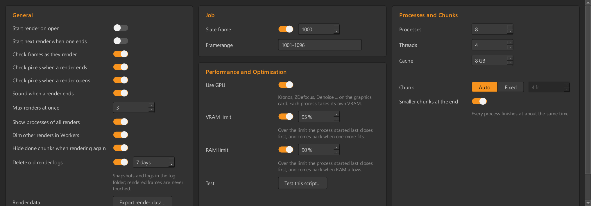
Nastavení se ukládá hned. U každého je po najetí myší nápověda. Reset to defaults vrátí všechno na výchozí hodnoty včetně sloupců tabulek; co se JKrender naučil o scriptech, zůstane.
| Nastavení | Co dělá | Výchozí |
|---|---|---|
| Start render on open | Render začne hned po otevření okna, bez kliknutí na Render. | vyp. |
| Start next render when one ends | Když render skončí nebo selže, sám se spustí další dosud nespuštěný render v pořadí karet. Render, který jsi zastavil, nic dalšího nespustí. | vyp. |
| Go on after a crash | Když JKrender spadne během renderu, karty se při dalším otevření vrátí (s tím, co je na disku). Zapnuto: běžící rendery se samy rozjedou. Vypnuto: čekají na Render. | vyp. |
| Check frames as they render | Každý frame hned po vyrenderování: je tam, není prázdný, je celý a čitelný, není výrazně menší než ostatní. Vypnuto: rozbitý frame se počítá jako hotový, dokud nestiskneš Check frames. | zap. |
| Check pixels when a render ends | Po dokončení renderu na pozadí zkontroluje pixely všech framů (černé, jednobarevné, stejné, odlišný formát; u EXR i NaN a inf). Jen hlásí. | zap. |
| Check pixels when a render opens | Stejná kontrola framů, které už jsou na disku, hned po otevření renderu. Render ji zastaví. | zap. |
| Sound when a render ends | Zvuk po skončení renderu, až doběhnou zapnuté kontroly. Jiný zvuk při chybě, rozbitých framech nebo problému v pixelech. Zastavený render je potichu. | zap. |
| Max renders at once | 1: rendery jdou po sobě, další se začne načítat, když předchozí dodělává poslední chunky (nejdřív hotový první shot). 2–3: běží vedle sebe a dělí se o procesy (celkově ne rychlejší, ale z každého shotu vidíš framy brzo). | 3 |
| Show processes of all renders | Workers a System ukazují procesy všech renderů. Vypnuto: jen vybraného. | zap. |
| Dim other renders in Workers | Na časové ose svítí chunky vybraného renderu, ostatní jsou ztlumené. | zap. |
| Hide done chunks when rendering again | Při opakovaném renderu ukazuje časová osa jen nový běh. | zap. |
| Delete old render logs | Při otevření JKrenderu smaže složky logů starší než nastavený počet dní. Framy nikdy. | zap., 7 dní |
| Render data › Export render data… | Uloží reporty všech renderů do jednoho JSON souboru k odeslání (kapitola 14). Bez názvů scriptů, cest a chyb. | — |
| Nastavení | Co dělá | Výchozí |
|---|---|---|
| Slate frame | Projekt začíná za slatem (např. 1001, slate na 1000). Zapnuto: každý render navíc vyrenderuje slate na tomto framu. | zap., 1000 |
| Framerange | Framy renderu, např. 1001-1100 nebo 1001-1010,1050. Každý render má svůj. Prázdné pole vrátí rozsah z Nuku. Potvrdíš Enterem nebo kliknutím jinam. Během renderu je zamčené. Framy na disku zůstávají. | z Nuku |
| Nastavení | Co dělá | Výchozí |
|---|---|---|
| Use GPU | Spouští Nuke s --gpu, takže GPU nody (Kronos, ZDefocus, Denoise…) počítá grafická karta. Lehký 4K script s Kronosem byl 3× rychlejší. Každý proces má vlastní VRAM. | zap. |
| VRAM limit | Blízko limitu dostane proces, který nejvíc narostl, po svém chunku čerstvý Nuke. Nad limitem běží méně procesů. Na 97 % se proces s největší VRAM zavře hned. | zap., 95 % |
| RAM limit | Nad limitem běží méně procesů: první se zavře ten spuštěný naposled. Až se paměť uvolní, vrátí se. Windows tak nezačnou swapovat. | zap., 90 % |
| Test › Test this script… | Změří několik nastavení na kousku scriptu a doporučí nejrychlejší (kapitola 12). | — |
| Analyze › Analyze script… | Rychlý rozbor scriptu (nejvýš 90 s) s doporučením (kapitola 12). | — |
| Nastavení | Co dělá | Výchozí |
|---|---|---|
| Processes | Nuke procesy pro všechny rendery dohromady. | 8 |
| Threads | Vlákna na proces (-m). | 4 |
| Cache | Limit cache Nuka na proces v GB (-c). Pod tím je poznámka, kolik script vzal na proces minule. | podle RAM |
| Chunk: Auto / Fixed | Auto: asi 4 chunky na proces, nejvýš 10 framů (46 framů s 8 procesy → 2, 96 → 3, 320+ → 10). Fixed: velikost zadáš vpravo. Platí pro chunky, které ještě nezačaly. | Auto |
| Smaller chunks at the end | Ke konci renderu se chunky zmenšují až na jednotlivé framy, takže všechny procesy doběhnou zhruba zároveň. | zap. |
Doporučený postup u nového nebo těžkého scriptu:
| Typ scriptu | Processes × Threads | Proč | Naměřeno |
|---|---|---|---|
| Lehký comp, keying, grade | 8 × 4 | Jeden Nuke nevytíží všechna vlákna, víc procesů ano. | testovací 4K script: 8 × 4 nejrychlejší |
| Těžký comp (Defocus, Denoise, hodně vrstev) | 4 × 8 | Jeden proces vytíží víc vláken. 8 procesů vyčerpá RAM, procesy se zavírají. | 8 × 4 s cache 10 GB: RAM 100 %, 11,9 fr/min, 4 × 8 rychlejší |
| Script, kterému roste VRAM (GPU nody) | 1–2 × 32/16 | VRAM roste s každým framem; víc procesů se na kartu nevejde. | VRAM +1,7 GB na frame → 1 × 32 |
Jeden Nuke se všemi vlákny otevře script a projde nody, které opravdu vedou do Writu (vypnuté větve vynechá). Ukáže, které běží na GPU a které čtou jiné framy. Pak vyrenderuje framy ze středu do testovací složky, celkem nejvýš 90 s, a pokud zbude čas, ještě jeden frame se zapnutými časovači Nuka.
Výsledek: start Nuka, otevření scriptu, čas framu, kolik vláken jeden Nuke vytíží, využití GPU, RAM, VRAM a jak VRAM roste na frame, nejpomalejší nody a doporučení Processes × Threads × Cache s důvody. Use these settings doporučení převezme.
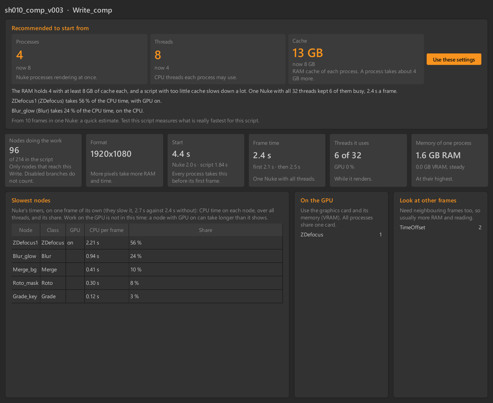
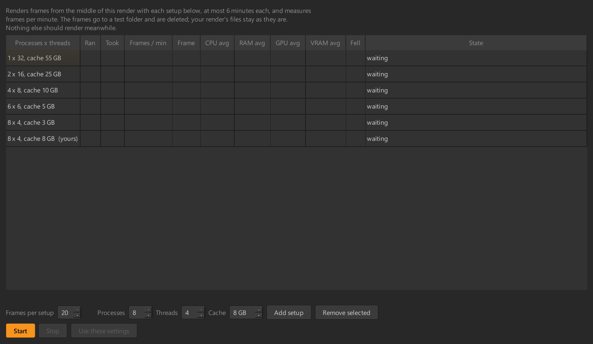
Vyrenderuje 20 framů ze středu vybraného renderu (počet jde změnit) s několika doporučenými kombinacemi Processes × Threads × Cache podle CPU a RAM. Add setup přidá vlastní kombinaci, Remove selected ji odebere. Start spustí měření, Stop ho přeruší.
Na konci doporučí nejrychlejší. Nic se nezmění, dokud nestiskneš Use these settings. Framy jdou do testovací složky a pak se smažou; render hooky Writu se v testu nespouští, takže test nikdy nezapíše do skutečného výstupu. Tabulky zůstávají v ~/.jkrender/test_results.
JKrender hlídá paměť, aby se Windows nezačaly swapovat a grafická karta se nezaplnila.
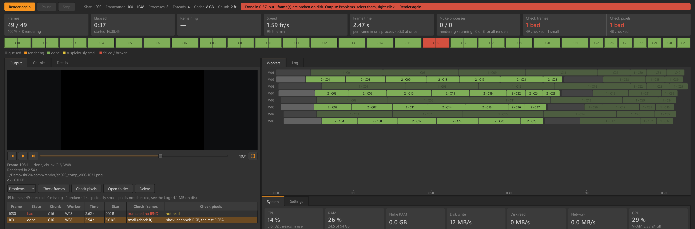
Render s useknutým framem (1030) a černým framem (1031), oba najdené ručním Check frames a Check pixels: červený pruh, červené framy v mapě, filtr Problems ukazuje jen je.
| Kontrola | Kdy | Co hledá |
|---|---|---|
| Check frames | Po každém framu (lze vypnout) a tlačítkem. Vždy při otevření renderu a před Renderem. | Chybějící, prázdné, useknuté a nečitelné soubory (EXR, PNG, JPEG, DPX), podezřele malé framy. |
| Check pixels | Po skončení renderu, při otevření (lze vypnout) a tlačítkem. | EXR, PNG, JPEG, TIFF a DPX: černé, prázdné a jednobarevné framy, framy stejné jako jiný, odlišná velikost, kanály a bitová hloubka. U EXR navíc NaN, inf a komprese. Ostatní formáty: jen stejné soubory. |
| Movie check | U MOV, MP4 a MXF. | Kodek, profil, fps, rozlišení, timecode a počet framů proti nastavení Writu. |
Zvuk zazní, až doběhnou zapnuté kontroly: s vypnutými hned po renderu, s Check frames po kontrole framů (ta běží už během renderu), s Check pixels až po kontrole pixelů.
Veselý zvuk: všechno v pořádku. Chybový zvuk: render selhal, má rozbité framy nebo pixelová kontrola našla problém. Ručně zastavený render je potichu.
Karty se vrátí při dalším otevření JKrenderu, nebo přes JKrender › Reopen Renders After a Crash v Nuku. Co je na disku, se započítá a zbylé Nuke procesy se ukončí. Render, který běžel, čeká na Render, pokud není zapnuté Go on after a crash. Když okno zavřeš normálně, nic se nevrací.
Každý render zapíše report.json: CPU, RAM a grafickou kartu tohoto PC, nastavení, rychlost, špičky paměti, zavírání kvůli limitům, start Nuka, otevření scriptu a druhy nodů ve scriptu. Export render data… (Settings › General) je uloží do jednoho souboru, který můžeš poslat. Nejsou v něm názvy scriptů, cesty ani chyby; script se pozná jen podle ID, které je stejné napříč jeho verzemi.
| Kde a co | Výsledek |
|---|---|
| Ctrl+Alt+R v Nuku | Pošle vybrané Writy do JKrenderu. |
| Klik na kartu renderu | Vybere render; celé okno ukazuje jeho data. |
| Shift + klik na karty | Vybere víc renderů pro Render, Pause, Stop. |
| Klik na frame v mapě framů | Otevře frame v náhledu. |
| Space | Přehrát / zastavit náhled (nikdy nezastaví render). |
| Kolečko / tažení v náhledu | Zoom / posun obrazu. |
| Dvojklik v náhledu | Celý frame; když už je celý, velký náhled. |
| Esc | Zpět z velkého náhledu. |
| Pravé tlačítko na framu (Output) | Render this frame / batch, Delete this frame / batch. |
| Pravé tlačítko na chunku (Chunks) | Render again, Show process log, Delete frames from chunk. |
| Pravé tlačítko na procesu (System, Workers) | Pause, Close after this chunk, Close, Work on, Add process, Start again, Show process log. |
| Pravé tlačítko do prázdného místa v System | Add process. |
| Klik na hlavičku tabulky System | Výběr a pořadí sloupců. |
| Tažení hranice panelů | Změní velikost panelů (uloží se). |
| Framerange + Enter | Potvrdí nový rozsah (Settings › Job). |
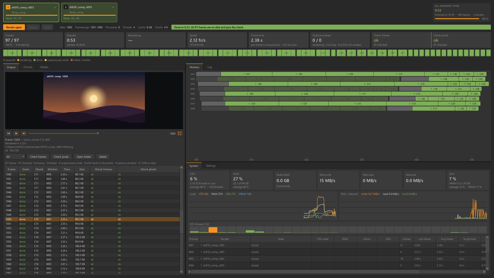
Hotový render: zelený pruh, karta vpravo nahoře ukazuje, jak dlouho rendery trvaly.
| Problém | Co s tím |
|---|---|
| Nuke procesy dlouho startují (30–50 s) | Obvykle start Nuka (licence, startovací skripty pipeline) ve chvíli, kdy PC renderuje. Log ukazuje rozdělení Nuke started in … / script opened in …. |
| Procesy se zavírají a startují znovu | Došla RAM nebo VRAM (State v System, Log). Méně procesů s více vlákny, menší Cache, nebo Analyze script. |
| Žlutý pruh „not checked“ | Kontrola framů je vypnutá nebo neproběhla. Stiskni Check frames. |
| Červený pruh | Output › filtr Problems ukáže, které framy. Pravým tlačítkem Render this frame / batch. Pruh se přepočítá i po ručním Check frames a Check pixels. |
| Náhled EXR se neukazuje | Chybí numpy/OpenEXR. Smaž lib/DECLINED a restartuj Nuke, nebo je nainstaluj podle README. |
| Render nezačal hned | Stav Waiting: jiné rendery už vytěžují PC (Max renders at once), nebo se čeká na paměť. |
| Vyčištění cache Nuka nefunguje | Po aktualizaci JKrenderu je potřeba Nuke jednou restartovat. |
| Nevím, co se renderovalo | Panel Details a Log › Open log folder (snapshot scriptu a job.json). |
JKrender 0.80 alpha · github.com/JanKanta/JKrender · návod vytvořen 6. 11. 2026. Snímky jsou z ukázkového renderu (shoty sh010 a sh020).